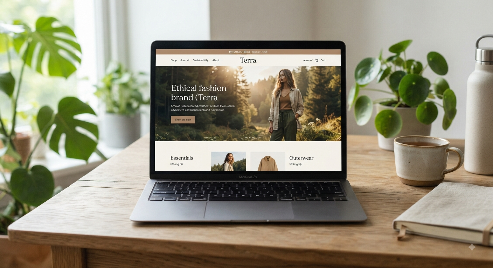
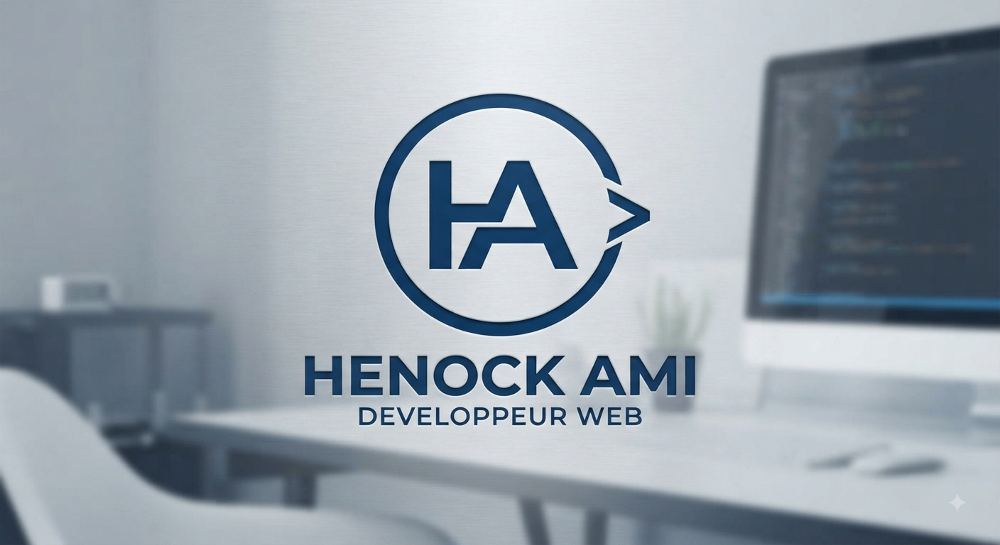
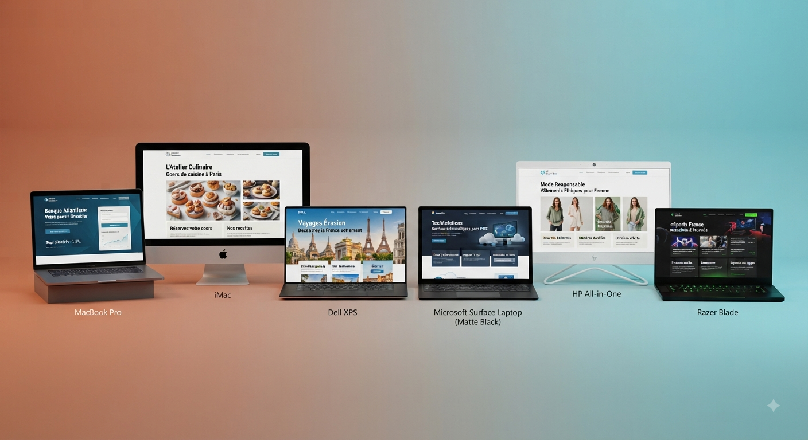

Site vitrine
Des sites modernes pour présenter clairement votre activité, vos services et vos coordonnées.
Développeur web & créateur de solutions digitales
Je conçois des sites web modernes, responsive et adaptés aux objectifs de chaque projet, avec une attention particulière portée à l'expérience utilisateur, à la performance et à l'identité de chaque activité.

HTML • CSS • JavaScript • Responsive Design • UI/UX
Mon profil
Je suis Henock Ami, développeur web passionné par la création de solutions digitales modernes et utiles.
Mon approche consiste à comprendre avant de développer. Chaque projet commence par l'identification du besoin, des objectifs et du public visé afin de construire une solution adaptée à la réalité du client.
Je m'intéresse particulièrement aux projets qui permettent aux entreprises, commerces, entrepreneurs et organisations de renforcer leur présence en ligne et de faciliter la relation avec leurs clients.
« Créer du digital qui sert réellement les objectifs de ceux qui me font confiance. »
Ce que je fais
Des solutions web claires et adaptées à votre activité.
Des sites modernes pour présenter clairement votre activité, vos services et vos coordonnées.
Des pages pensées autour d'un objectif précis : présenter une offre ou générer des demandes.
Une présence web cohérente pour présenter et faire découvrir votre activité en ligne.
Présentez vos produits, collections, services et moyens de commande directement sur le web.
Des interfaces fluides sur smartphones, tablettes et ordinateurs.
Correction, amélioration et évolution de votre site selon les nouveaux besoins.
Réalisations
Découvrez une sélection de projets conçus pour répondre à différents besoins et problématiques digitales.

Projet conceptuel
Concept de présence web pour une boutique en ligne, pensé pour présenter ses collections et faciliter les commandes.

Projet personnel
Portfolio personnel conçu pour présenter mes services, mes compétences et faciliter les prises de contact.

Projet à venir
Concept de site pour une activité locale : services, informations utiles et contact direct depuis le site.
Ma méthode de travail
Nous discutons de votre activité, de vos objectifs et de vos besoins.
J'identifie les fonctionnalités, contenus et éléments nécessaires au projet.
Je structure l'expérience utilisateur et l'interface pour une solution claire.
Je transforme la conception en expérience web responsive et optimisée.
Vérification du fonctionnement, de l'affichage et des interactions.
Mise à disposition du projet et accompagnement pour sa prise en main.
La différence
Je cherche d'abord à comprendre votre activité et vos objectifs avant de proposer une solution.
Des interfaces propres et pensées pour offrir une expérience agréable.
Votre site est efficace aussi bien sur smartphone que sur ordinateur.
Un échange simple et direct tout au long du projet.
Je privilégie les solutions utiles plutôt que la complexité inutile.
Compétences
Questions fréquentes
Le prix dépend du type de projet, du nombre de pages, des fonctionnalités et des besoins spécifiques. Chaque projet fait donc l'objet d'une estimation adaptée.
Oui. Je travaille avec des entreprises, commerces, entrepreneurs et organisations, notamment à Kolwezi, et je peux également travailler à distance.
Oui. Les sites sont conçus pour s'adapter aux smartphones, tablettes et ordinateurs.
La durée dépend de la complexité du projet et des éléments nécessaires à sa réalisation.
Il suffit de me contacter afin de présenter votre besoin et discuter des prochaines étapes.
Contact
Vous avez une entreprise, un commerce, une idée ou un projet qui mérite d'être présent en ligne ? Décrivez-moi votre besoin et discutons ensemble de la meilleure façon de le concrétiser.